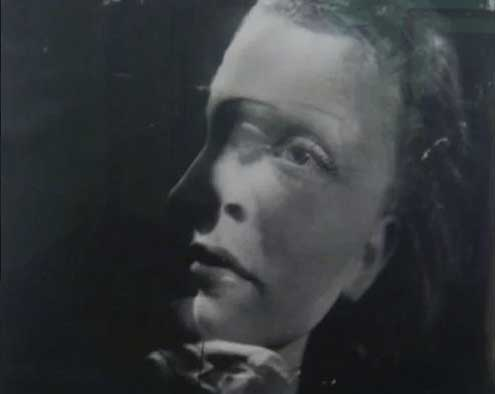
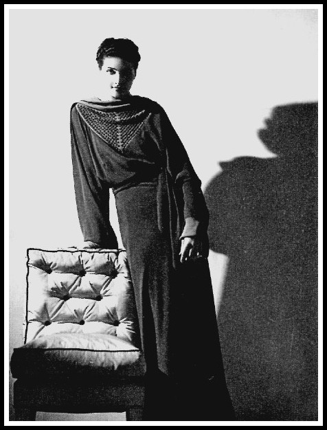
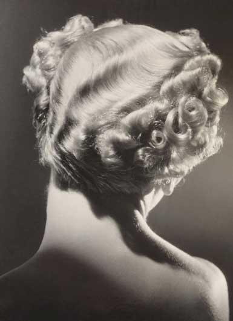
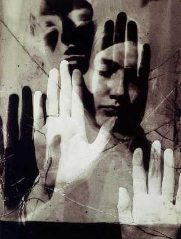
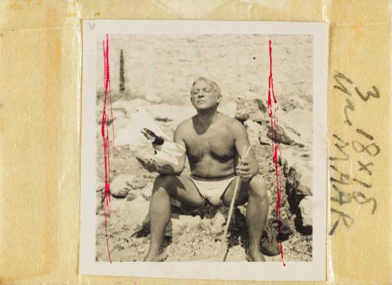
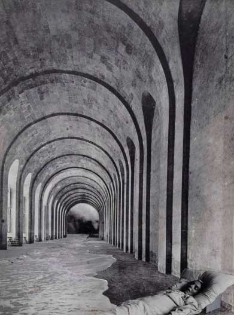
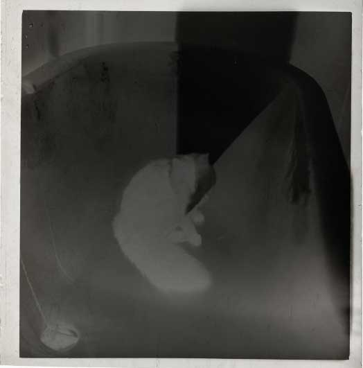

CARRERA
La carrera de Dora Maar fue compleja y marcada por su talento fotográfico, sus conexiones con el movimiento surrealista y su relación con algunas de las figuras más importantes del arte del siglo XX, como Pablo Picasso. Su trayectoria no solo estuvo influenciada por su relación con Picasso, sino también por su desarrollo personal y su evolución artística. A continuación, se detalla su carrera en varios períodos clave:

Primeros años y formación
Dora Maar, nacida Henriette Theodora Markovitch en París en 1907, pasó su infancia en Argentina, donde vivió con su familia hasta que regresó a Francia a los 23 años. Inicialmente, su formación fue en pintura, pero pronto se inclinó por la fotografía, un medio que comenzó a estudiar en la Académie Lothe y luego en la École de Photographie de la Ville de Paris. Su educación cosmopolita, enriquecida por su tiempo en Buenos Aires, le permitió desarrollar una visión artística única que se alejó de las tradiciones fotográficas de la época.
Éxito en la fotografía de moda
Durante la década de 1930, Dora Maar se hizo un nombre en el mundo de la fotografía, inicialmente trabajando en el ámbito de la moda. Abrió un estudio junto a Pierre Kéfer, donde ambos empezaron a recibir encargos de todo tipo, desde fotografía publicitaria hasta retratos de moda. Las imágenes de Dora Maar comenzaron a llenar las portadas de las revistas más destacadas de la época, lo que consolidó su estatus como una de las fotógrafas más populares de su tiempo.
 Encuentro con el surrealismo
La verdadera innovación de Dora Maar comenzó cuando se adentró en el movimiento surrealista. Fue en la década de 1930 cuando conoció a artistas influyentes como Man Ray y Brassaï, lo que marcó el inicio de su exploración del surrealismo y sus experimentaciones con la técnica de la doble exposición, los fotomontajes y la manipulación de las imágenes. Estas obras rompían con las convenciones de la fotografía tradicional y creaban una atmósfera de misterio y surrealismo que se alineaba con las ideas vanguardistas de la época. Es en este período cuando Dora Maar comenzó a trabajar en proyectos más experimentales y a posicionarse políticamente, mostrando una clara simpatía por las ideas de izquierda sin llegar a afiliarse a ningún partido. Su trabajo fue una mezcla de fotografía conceptual y arte, buscando revelar los aspectos ocultos y surrealistas de la realidad cotidiana.
Relación con Pablo Picasso
La relación de Dora Maar con Pablo Picasso, iniciada en 1936, fue sin duda un punto de inflexión en su carrera y en su vida personal. Picasso se convirtió en su amante y fuente de inspiración. La relación fue tumultuosa, y durante los primeros años, Dora Maar fue una presencia constante en la obra de Picasso, quien la retrató en más de 500 ocasiones, explorando diferentes estilos, desde el cubismo hasta el retrato más íntimo. A través de estos retratos, Picasso capturó la complejidad emocional y psicológica de Dora, utilizando sus episodios de ansiedad y sufrimiento como inspiración para su obra. La influencia de Dora Maar en Picasso no solo fue artística, sino también intelectual. Los dos compartían intereses en la política y la pintura, y en muchos aspectos, su relación de pareja fue una fusión de ideas artísticas. Sin embargo, la relación comenzó a deteriorarse a medida que Picasso se alejaba emocionalmente de Dora y comenzó a mostrar su interés por Françoise Gilot, una joven artista que más tarde sería su compañera.
Crisis emocional y alejamiento del arte
La relación con Picasso tuvo un fuerte impacto en la salud mental de Dora Maar. Sufre varios episodios nerviosos que culminaron en una hospitalización en una clínica psiquiátrica, donde fue sometida a tratamientos de electrochoques. Su salud mental y emocional se vio gravemente afectada, y se retiró gradualmente del mundo artístico, pasando de ser una fotógrafa de renombre a una mujer alejada del foco público. Es importante destacar que Dora Maar fue víctima de la manipulación emocional por parte de Picasso, quien usó su sufrimiento para alimentarse de su dolor y plasmarlo en su arte. A lo largo de su recuperación, Maar se retiró del mundo del surrealismo y comenzó a dedicarse a la pintura, un medio que había dejado de lado cuando empezó a dedicarse exclusivamente a la fotografía
Regreso a la pintura y últimos años
Después de su crisis emocional, Dora Maar se dedicó a la pintura, pero su enfoque cambió, y comenzó a retratar paisajes y escenas más introspectivas. Aunque nunca dejó de ser una creadora, su obra ya no era la misma que la de los años anteriores, y sus exposiciones fueron menos frecuentes. En este periodo, Dora Maar comenzó a intervenir negativos fotográficos antiguos con pintura, una técnica que sería redescubierta solo después de su muerte. La artista continuó trabajando de forma aislada en su hogar, sin el apoyo del círculo artístico que la había rodeado en su juventud. Sus exposiciones fueron menos exitosas, y a menudo se sentía eclipsada por la figura de Picasso, quien continuó cosechando éxitos mientras Dora se encontraba en un retiro personal.
Legado y reconocimiento póstumo
A lo largo de los años, el reconocimiento hacia Dora Maar disminuyó, y la mayor parte de su legado fue oscurecido por su relación con Picasso. Sin embargo, después de su muerte en 1997, su obra comenzó a ser reevaluada, y en las últimas décadas ha recibido un reconocimiento creciente. La intervención de sus negativos fotográficos con pintura, así como su importante contribución al surrealismo, ha sido reconocida por críticos de arte contemporáneo. Hoy en día, Dora Maar es considerada una de las fotógrafas más influyentes del siglo XX, y su legado artístico sigue siendo estudiado en el contexto de las vanguardias de la época. Sus trabajos fotográficos y su participación en el surrealismo y el dadaísmo, así como su habilidad para capturar lo abstracto y lo emocional en sus imágenes, le han ganado un lugar destacado en la historia del arte.